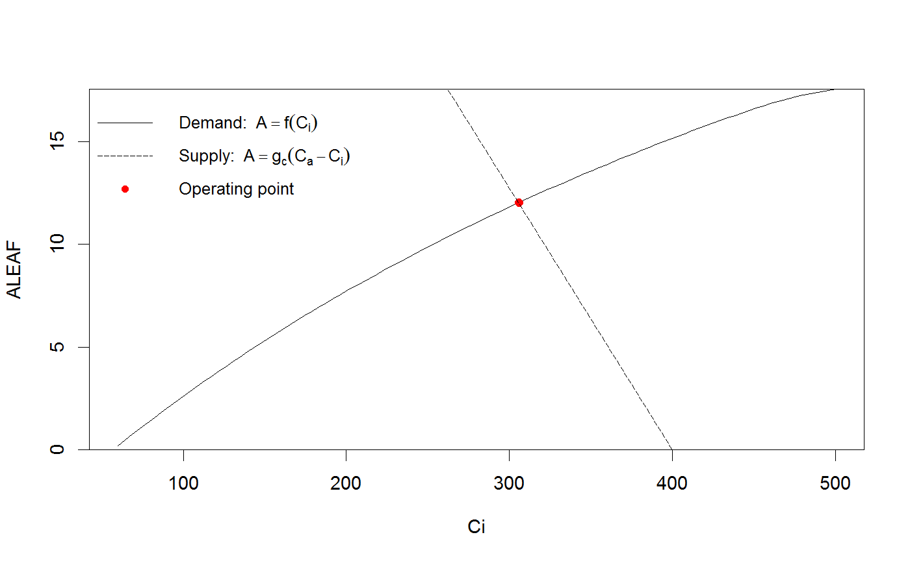

Coupled leaf gas exchange model
A coupled photosynthesis - stomatal conductance model, based on the Farquhar model of photosynthesis, and a Ball-Berry type model of stomatatal conductance. Includes options for temperature sensitivity of photosynthetic parameters, day respiration (optionally calculated from leaf temperature), and mesophyll conductance.
Photosyn(VPD = 1.5, Ca = 400, PPFD = 1500, Tleaf = 25, Patm = 100, RH = NULL, gsmodel = c("BBOpti", "BBLeuning", "BallBerry", "BBdefine"), g1 = 4, g0 = 0, gk = 0.5, vpdmin = 0.5, D0 = 5, GS = NULL, BBmult = NULL, alpha = 0.24, theta = 0.85, Jmax = 100, Vcmax = 50, gmeso = NULL, TPU = 1000, alphag = 0, Rd0 = 0.92, Q10 = 1.92, Rd = NULL, TrefR = 25, Rdayfrac = 1, EaV = 82620.87, EdVC = 0, delsC = 645.1013, EaJ = 39676.89, EdVJ = 2e+05, delsJ = 641.3615, GammaStar = NULL, Km = NULL, Ci = NULL, Tcorrect = TRUE, returnParsOnly = FALSE, whichA = c("Ah", "Amin", "Ac", "Aj")) Aci(Ci, ...)
Arguments
| VPD | Vapour pressure deficit (kPa) (not needed when RH provided) |
|---|---|
| Ca | Atmospheric CO2 concentration (ppm) |
| PPFD | Photosynthetic photon flux density ('PAR') (mu mol m-2 s-1) |
| Tleaf | Leaf temperature (degrees C) |
| Patm | Atmospheric pressure (kPa) (but see warning below!) |
| RH | Relative humidity (in %) (not needed when VPD provided) |
| gsmodel | One of BBOpti (Medlyn et al. 2011), BBLeuning (Leuning 1995), BallBerry (Ball et al. 1987), or BBdefine (for full control; see Details). |
| g0, g1 | Parameters of Ball-Berry type stomatal conductance models. |
| gk | Optional, exponent of VPD in gs model (Duursma et al. 2013) |
| vpdmin | Below vpdmin, VPD=vpdmin, to avoid very high gs. |
| D0 | Parameter for the BBLeuning stomatal conductance model. |
| GS | Optionally, stomatal conductance (to H2O). If provided, |
| BBmult | Optional, only used when |
| alpha | Quantum yield of electron transport (mol mol-1) |
| theta | Shape of light response curve. |
| Jmax | Maximum rate of electron transport at 25 degrees C (mu mol m-2 s-1) |
| Vcmax | Maximum carboxylation rate at 25 degrees C (mu mol m-2 s-1) |
| gmeso | Mesophyll conductance (mol m-2 s-1). If not NULL (the default), Vcmax and Jmax are chloroplastic rates. |
| TPU | Triose-phosphate utilization rate (mu mol m-2 s-1); optional. |
| alphag | Fraction of glycolate not returned to the chloroplast; parameter in TPU-limited photosynthesis (optional, only to be used when TPU is provided) (0 - 1) |
| Rd0 | Day respiration rate at reference temperature ( |
| Q10 | Temperature sensitivity of Rd. |
| Rd | Day respiration rate (mu mol m-2 s-1), optional (if not provided, calculated from Tleaf, Rd0, Q10 and TrefR) |
| TrefR | Reference temperature for Rd (Celcius). |
| Rdayfrac | Ratio of Rd in the light vs. in the dark. |
| EaV, EdVC, delsC | Vcmax temperature response parameters |
| EaJ, EdVJ, delsJ | Jmax temperature response parameters |
| Km, GammaStar | Optionally, provide Michaelis-Menten coefficient for Farquhar model, and Gammastar. If not provided, they are calculated with a built-in function of leaf temperature. |
| Ci | Optional, intercellular CO2 concentration (ppm). If not provided, calculated via gs model. |
| Tcorrect | If TRUE, corrects input Vcmax and Jmax for actual Tleaf (if FALSE, assumes the provided Vcmax and Jmax are at the Tleaf provided) |
| returnParsOnly | If TRUE, returns calculated Vcmax,Jmax,Km and GammaStar based on leaf temperature. |
| whichA | Which assimilation rate does gs respond to? |
| … | Further arguments passed to |
Value
Returns a dataframe.
Details
The coupled photosynthesis - stomatal conductance model finds the intersection between the supply of CO2 by diffusion, and the demand for CO2 by photosynthesis. See Farquhar and Sharkey (1982) for basic description of this type of model, Duursma (2015) for more details on the implementation in the plantecophys package, and Duursma et al. (2014) for an example application (that uses this implementation).
Photosynthesis model and temperature response -
The model of Farquhar et al. (1980) is used to estimate the dependence of leaf net photosynthesis rate (ALEAF) on intercellular CO2 concentration (Ci), accounting for all three limitations (electron transport, carboxylation, and TPU limitation). The equations for the temperature response of photosynthetic parameters, including Vcmax, Jmax, Gammastar, and Km follow Medlyn et al. (2002). However, note that the default temperature response parameter values are not taken from Medlyn, and likely will have to be adjusted for your situation.
#' By default, the Photosyn function returns the hyperbolic minimum of Vcmax and Jmax-limited photosynthetic rates, as well as the hyperbolic minimum of Jmax-limited and TPU-limited rates. This approach avoids the discontinuity at the transition between the two rates (thus allowing use of Photosyn and fitaci in optimization or fitting routines). The individual rates (Ac, Aj and Ap) are also returned as output should they be needed. Note that those rates are output as gross photosynthetic rates (leaf respiration has to be subtracted to give net leaf photosynthesis).
Coupled leaf gas exchange
When Ci is not provided, Ci is calculated from the intersection between the 'supply' and 'demand', where 'demand' is given by the Farquhar model of photosynthesis (A=f(Ci)), and supply by the stomatal conductance. The latter is, by default, estimated using the stomatal conductance model of Medlyn et al. (2011), but two other models are provided as well (Ball-Berry and Leuning, see gsmodel argument). Otherwise, stomatal conductance may be directly provided via the GS argument.
Stomatal conductance models -
At the moment, three stomatal conductance models are implemented. The 'BBOpti' model is a slightly more general form of the model of Medlyn et al. 2011 (see Duursma et al. 2013). It is given by (in notation of the parameters and output variables of Photosyn),
$$GS = g0 + 1.6*(1 + g1/D^(1-gk))*ALEAF/CA$$
where gk = 0.5 if stomata behave optimally (cf. Medlyn et al. 2011).
The 'BBLeuning' model is that of Leuning (1995). It is given by,
$$GS = g0 + g1*ALEAF/(Ca * (1 + VPD/D0))$$
Note that this model also uses the g1 parameter, but it needs to be set to a much higher value to be comparable in magnitude to the BBOpti model.
The 'BallBerry' model is that of Ball et al. (1987). It is given by,
$$GS = g0 + g1*RH*ALEAF/Ca$$
Where RH is relative humidity. Again, the g1 value is not comparable to that used in the previous two models.
Finally, Photosyn provides a very flexible Ball-Berry model, where the multiplier has to be specified by the user, the model is:
$$GS = g0 + BBmult*ALEAF$$
This interface can be used to quickly simulate what happens if stomata do not respond to humidity at all (in which case BBmult=g1/Ca, or ca. 5/400), or to use the Tuzet model of stomatal conductance inside another model that provides the leaf water potential function.
For the full numerical solution to the Cowan-Farquhar optimization, use the FARAO function (which was used in Medlyn et al. 2011 for comparison to the approximation there presented). See Duursma (2015) for more details.
Mesophyll conductance -
If the mesophyll conductance gmeso is provided as an input, it is assumed that Vcmax and Jmax are the chloroplastic rates, and leaf photosynthesis is calculated following the equations from Ethier and Livingston (2004). When very low mesophyll conductance rates are input, the model may return poor solutions (and sometimes they may not exist).
Simulating A-Ci curves
If Ci is provided as an input, this function calculates an A-Ci curve. For example, you may do Photosyn(Ci=300), for which the function Aci is included as a shortcut (Aci(300)).
Atmospheric pressure -
A correction for atmospheric pressure (Patm) is implemented in fitaci, but not in Photosyn. In fitaci, the necessary corrections are applied so that estimated Vcmax and Jmax are expressed at standard pressure (Patm=100kPa). In Photosyn, however, the corrections are much more complicated and tend to be very small, because effects of Patm on partial pressures are largely offset by increases in diffusivity (Terashima et al. 1995, Gale 1973).
Note that Patm is an argument to the Photosyn function, but it only affects calculations of Km and GammaStar (as used by fitaci), and transpiration rate. Setting only Patm does not correct for atmospheric pressure effects on photosynthesis rates.
The simulation of limitation of the photosynthetic rate to triose-phosphate utilization follows details in Ellsworth et al. (2015), their Eq. 7. Note that the parameter alphag is set to zero by default.
References
Duursma, R.A., Payton, P., Bange, M.P., Broughton, K.J., Smith, R.A., Medlyn, B.E., Tissue, D. T., 2013, Near-optimal response of instantaneous transpiration efficiency to vapour pressure deficit, temperature and [CO2] in cotton (Gossypium hirsutum L.). Agricultural and Forest Meteorology 168 : 168 - 176.
Duursma, R.A., Barton, C.V.M., Lin, Y.-S., Medlyn, B.E., Eamus, D., Tissue, D.T., Ellsworth, D.S., McMurtrie, R.E., 2014. The peaked response of transpiration rate to vapour pressure deficit in field conditions can be explained by the temperature optimum of photosynthesis. Agricultural and Forest Meteorology 189 - 190, 2-10. doi:10.1016/j.agrformet.2013.12.007
Duursma, R.A., 2015. Plantecophys - An R Package for Analysing and Modelling Leaf Gas Exchange Data. PLoS ONE 10, e0143346. doi:10.1371/journal.pone.0143346
Ellsworth, D.S., Crous, K.Y., Lambers, H., Cooke, J., 2015. Phosphorus recycling in photorespiration maintains high photosynthetic capacity in woody species. Plant Cell Environ 38, 1142-1156. doi:10.1111/pce.12468
Ethier, G. and N. Livingston. 2004. On the need to incorporate sensitivity to CO2 transfer conductance into the Farquhar von Caemmerer Berry leaf photosynthesis model. Plant, Cell & Environment. 27:137-153.
Farquhar, G.D., S. Caemmerer and J.A. Berry. 1980. A biochemical model of photosynthetic CO2 assimilation in leaves of C3 species. Planta. 149:78-90.
Farquhar, G. D., & Sharkey, T. D. (1982). Stomatal conductance and photosynthesis. Annual review of plant physiology, 33(1), 317-345.
Gale, J., 1972. Availability of Carbon Dioxide for Photosynthesis at High Altitudes: Theoretical Considerations. Ecology 53, 494-497. doi:10.2307/1934239
Leuning, R. 1995. A critical-appraisal of a combined stomatal-photosynthesis model for C-3 plants. Plant Cell and Environment. 18:339-355.
Medlyn, B.E., E. Dreyer, D. Ellsworth, M. Forstreuter, P.C. Harley, M.U.F. Kirschbaum, X. Le Roux, P. Montpied, J. Strassemeyer, A. Walcroft, K. Wang and D. Loustau. 2002. Temperature response of parameters of a biochemically based model of photosynthesis. II. A review of experimental data. Plant Cell and Environment. 25:1167-1179.
Medlyn, B.E., R.A. Duursma, D. Eamus, D.S. Ellsworth, I.C. Prentice, C.V.M. Barton, K.Y. Crous, P. De Angelis, M. Freeman and L. Wingate. 2011. Reconciling the optimal and empirical approaches to modelling stomatal conductance. Global Change Biology. 17:2134-2144.
Terashima, I., Masuzawa, T., Ohba, H., Yokoi, Y., 1995. Is Photosynthesis Suppressed at Higher Elevations Due to Low CO2 Pressure? Ecology 76, 2663-2668. doi:10.2307/2265838
See also
Examples
# Run the coupled leaf gas exchange model, set only a couple of parameters Photosyn(VPD=2, g1=4, Ca=500)#> Ci ALEAF GS ELEAF Ac Aj Ap Rd VPD Tleaf #> 1 369.3981 14.19466 0.1706377 3.412753 15.12654 17.03685 1000 0.92 2 25 #> Ca Cc PPFD Patm #> 1 500 369.3981 1500 100# It is easy to set multiple values for inputs (and these can be mixed with single inputs); r <- Photosyn(VPD=seq(0.5, 4, length=25), Vcmax=50, Jmax=100) with(r, plot(VPD, ALEAF, type='l'))# Set the mesophyll conductance run1 <- Photosyn(PPFD=seq(50,1000,length=25), gmeso=0.15, Vcmax=40, Jmax=85) with(run1, plot(PPFD, GS, type='l'))# Run A-Ci curve only (provide Ci instead of calculating it). arun1 <- Aci(Ci=seq(50, 1200, length=101), Vcmax=40, Jmax=85) arun2 <- Aci(Ci=seq(50, 1200, length=101), Vcmax=30, Jmax=70) with(arun1, plot(Ci, ALEAF, type='l'))with(arun2, points(Ci, ALEAF, type='l', lty=5))# Find the intersection between supply of CO2 and demand for CO2 (cf. Farquhar and Sharkey 1982). # Set some parameters gs <- 0.2 # stomatal conductance to H2O Ca <- 400 # ambient CO2 gctogw <- 1.57 # conversion gc <- gs / gctogw # stomatal conductance to CO2 # Demand curve (Farquhar model) p <- Aci(seq(60,500,length=101), Ca=400) # Provide stomatal conductance as input, gives intersection point. g <- Photosyn(GS=gs, Ca=Ca) # Intersection point visualized par(yaxs="i") with(p, plot(Ci, ALEAF, type='l', ylim=c(0,max(ALEAF))))with(g, points(Ci, ALEAF, pch=19, col="red"))abline(gc * Ca, -gc, lty=5)legend("topleft", c(expression("Demand:"~~A==f(C[i])), expression("Supply:"~~A==g[c]*(C[a]-C[i])), "Operating point"), lty=c(1,5,-1),pch=c(-1,-1,19), col=c("black","black","red"), bty='n', cex=0.9)